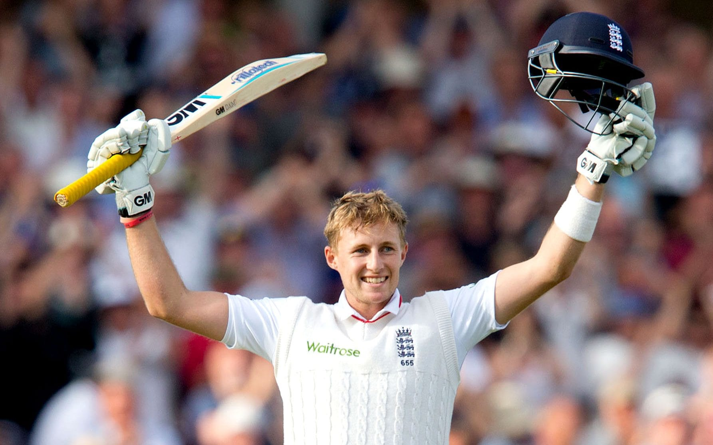

December 30, 1990 age 31 years
National side England (2012–present) Test debut (cap 655) 13 December 2012 v India Last Test 24 March 2022 v West Indies ODI debut (cap 227) 11 January 2013 v India Last ODI 4 July 2021 v Sri Lanka ODI shirt no. 66 T20I debut (cap 63) 22 December 2012 v India Last T20I 5 May 2019 v Pakistan T20I shirt no. 66